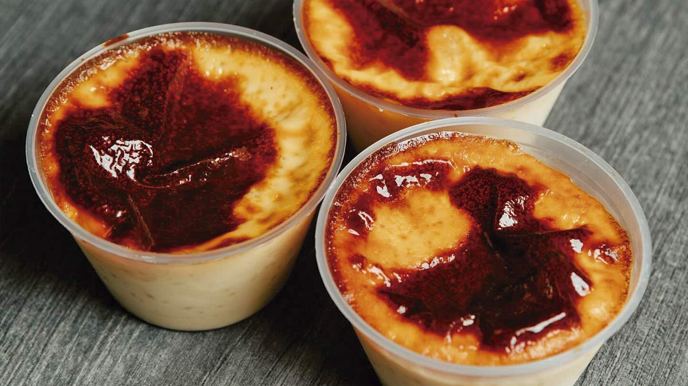
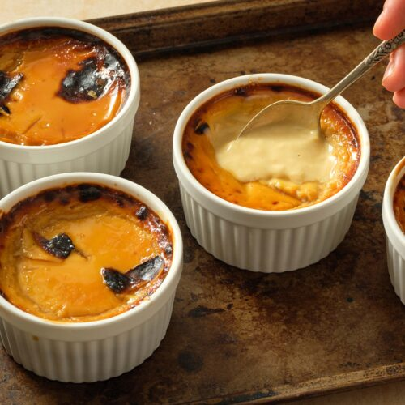

Aprendendo um pouco sobre a culinaria mexicana..
A culinária mexicana é caracterizada pela combinação de sabores picantes, uso de especiarias e ervas frescas, e pela utilização de ingredientes frescos. A base da alimentação mexicana, desde tempos pré-colombianos, é o milho, que, juntamente com o feijão, forma a base de muitos pratos.
Tacos
Os tacos são um prato típico da culinária mexicana, consistindo em tortillas de milho ou trigo recheadas com diversos ingredientes, como carnes, frango ou vegetais, e temperados com uma variedade de especiarias e molhos.
É um prato muito popular em todo o México e é frequentemente servido em restaurantes e barracas ao longo do país.
Burritos
Os burritos são um prato típico da culinária mexicana, consistindo em tortillas de milho ou trigo recheadas com diversos ingredientes, como carne moída, frango, peixe ou vegetais, e temperados com uma variedade de especiarias e molhos.
É um prato muito popular em todo o México e é frequentemente servido em restaurantes e barracas ao longo do país.



Jericalla
A Jericalla é um prato tradicional mexicano, que mistura características do pudim de leite e do crème brûlée.
Ela é cozida até ficar cremosa, finalizada com uma superfície queimada que dá um sabor caramelizado.
Guacamole
Molho ou pasta tradicional da culinária mexicana, à base de abacate maduro amassado, tomate, cebola, coentro, limão e pimenta.
É um prato versátil, servido com tortillas, nachos ou como acompanhamento, originário dos astecas, seu nome significa "molho de abacate".
Pan de Muerto
Pan-de-muerto é um pão doce adornado com figuras, por vezes na forma de caveira, e polvilhado de açúcar.
Ele é um doce associado ao Dia dos Mortos e faz parte das oferendas colocadas nos “altares-dos-mortos”.